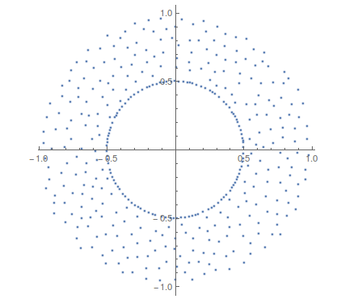

A Random Gallery
 Left to right: Poisson point process, Ginibre eigenvalues and Gaussian zeroes
Left to right: Poisson point process, Ginibre eigenvalues and Gaussian zeroes

Left to right: Surface plot of a normalised GAF, Linear rigidity of Ginibre eigenvalues


Left to right: Conditional intensity for a Gaussian matrix and for a Gaussian polynomial